7.2 Management Console
启动JRockit Management Console非常简单，在JVM浏览器中，选择要连接目标JVM，然后在工具栏中添加 Management Console按钮，或者在右键菜单中点击 启动控制台即可。
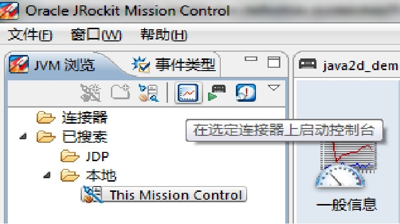
在启动Management Console时有个小技巧，可以直接将拖放到编辑区，默认情况下会打开与目标JVM的连接。在第6章中曾经介绍过，JRockit Mission Control可以连接到远程和本地的JVM实例，区别在于，运行在本地的JVM实例会自动被发现，而且也无法利用刚刚提到的小技巧来创建连接。
更多有关不同连接类型的内容，请参见6.2.6节。
7.2.1 一般信息
Management Console中标签页按功能划分出了几个不同的标签组，垂直排列在编辑区的左侧（如图所示），其中第一个标签组是 一般信息：
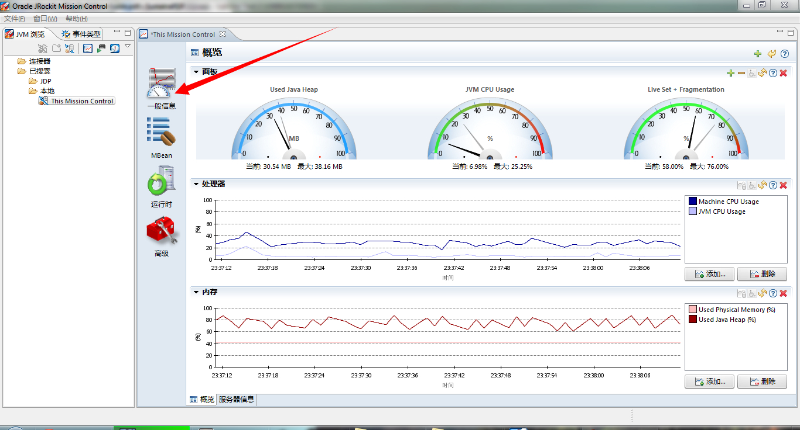
一般信息标签组中只有一个标签 概览。在编辑区底部可切换显示不同的标签页。
译者注，在原书所使用的版本中，确实是只有一个标签页的。这里我使用的本地机器中的jrockit-jdk1.6.0_45-R28.2.7-4.1.0，在"一般信息" 标签组中包含了两个标签页。
7.2.1.1 概览
概览标签页中显示了JVM和系统环境中的一些关键信息，该标签页中的内容可根据实际需要做定制化处理。下图是 概览标签页的截图。
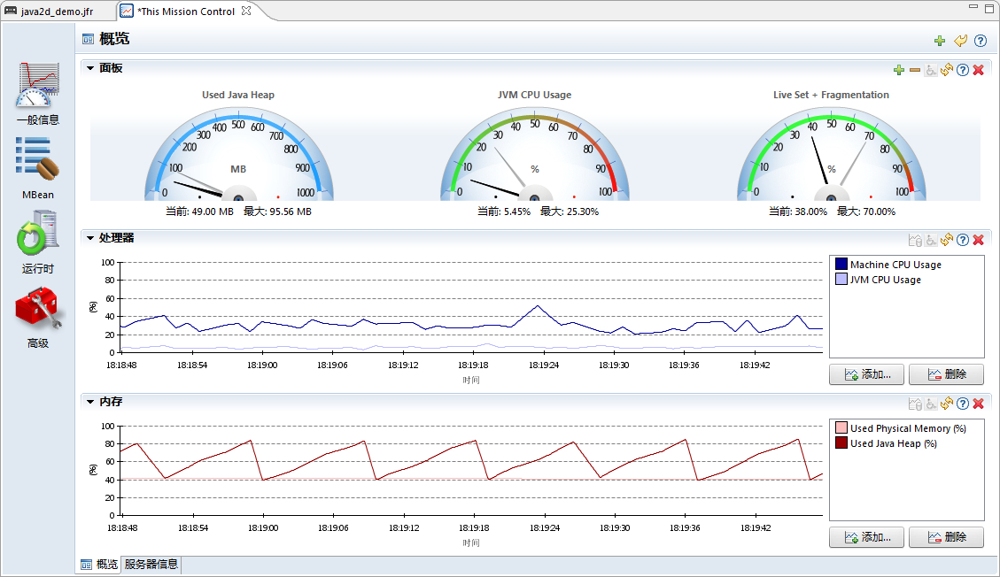
JRockit Mission Control把标签页中的内容划分为不同的展示区。概览标签页顶部的展示区是 仪表盘，其中的每个仪表盘都展示了相关统计数据的当前值和最大值，具体数值显示在对应的仪表盘底部。
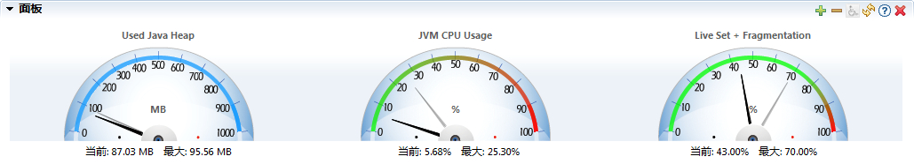
在Management Console中，大部分展示区都可以折叠起来（点击展示区左上角的倒三角图标即可），以便留出更大的空间来展示其他数据。此外，展示区中还包含了很多其他按钮：
- 可访问模式: 在图形模式和文字模式之间切换 • 刷新: 刷新当前展示区的数据 • 帮助: 提供针对当前展示区的帮助信息 • 关闭: 关闭当前展示区 • 添加: 在当前展示区中添加要展示的数据类型。若是在仪表盘展示区中点击 添加按钮，则会新增一个仪表盘 • 删除: 从当前展示区中删除某个数据展示组件 • 表设置: 打开一个对话框以配置数据表的展示内容。大部分数据表只显示了一部分内容，可以通过 表设置来选择要展示的内容
译者注：懒得为每个按钮截图了，见谅
当然，在修改了标签内中的展示内容后，还可以通过右上角的 重置按钮恢复为默认配置。
用户可以根据实际需求重新设定仪表盘所显示的内容，添加删除所要显示的属性，甚至是整体关闭仪表盘展示区。由于仪表盘中可以显示目标属性的峰值，所以当需要监控系统关键属性的峰值时，保留仪表盘还是有必要的。
对自动发现的连接所作的修改是无法保存的。如果想要保留自定义配置，则需要按照第6章中所介绍内容来自定义连接配置。
仪表盘展示区中默认显示 Used Java Heap、 JVM CPU Usage和 Live Set + Fragmentation属性的当前值和峰值。其中，对 Live Set + Fragmentation的属性值的统计相对简单，只需要在执行垃圾回收时进行累加即可。如果该仪表盘中没有显示任何数值，则表明JVM还有进行过垃圾回收。
点击 运行时标签组中 内存标签页的 运行完全垃圾回收按钮，可以强制JVM执行垃圾回收
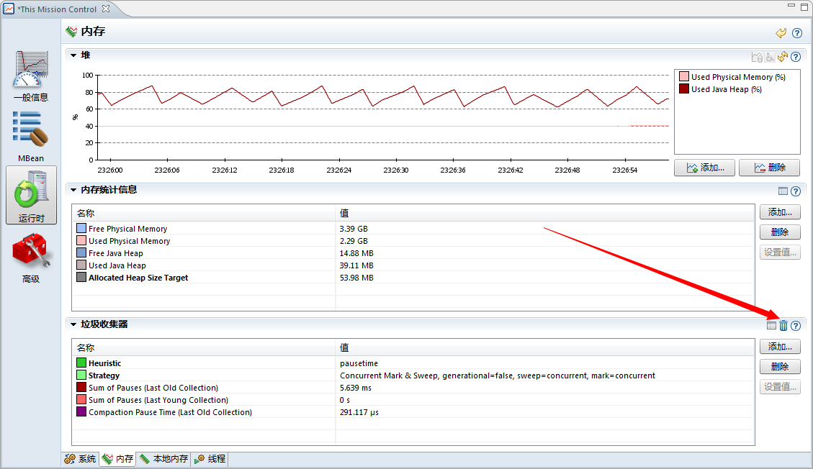
CPU资源很宝贵，最好不要浪费其性能，而是使其能持续饱和运行的状态。例如，对于密集计算的批处理应用程序来说，为了能够尽快完成计算任务，充分利用CPU资源是很重要的。但普通情况下，在尽可能完成计算任务的前提下，仍要保证应用程序的响应性。如果CPU使用率过高，就需要考虑提升硬件性能，或检查应用程序的实现细节了。JRockit Flight Recording可以帮助开发者找出CPU资源都都消耗在了哪里。
若堆中存活对象所占的比重非常大，会提升垃圾回收的执行频率，从而增加垃圾回收器的执行开销。如果 Live Set + Fragmentation仪表盘中的计数保持在一个较高的水平，而垃圾回收器的执行效率不好的话，可以考虑增大内存堆的大小来提升运行性能。如果 Live Set + Fragmentation仪表盘的计数随着时间的推移而稳步增长，则有可能是发生了内存泄漏。在第10章中会对内存泄漏相关的内容做详细介绍。
平台MBean服务器提供了MBean属性值变化的订阅服务，这其中既包括应用程序服务器MBean的属性，也包括用户执行注册到平台MBean服务器的中的MBean，例如WebLogic Server中的OpenSessionsCurrentCount属性。
默认情况下，WebLogic Server并没有使用平台MBean服务器。如果想要监控WebLogic Server MBean和平台所提供的其他MBean，对WebLogic Server做简单配置即可。详细步骤，请查询WebLogic Server的相关文档。
WebLogic Server官方的建议是，不要使用平台MBean服务器，因为这具有安全隐患，当应用程序运行在不可完全信任的JVM中时，隐患尤其严重。此时，如果真的要启用平台MBean服务器的话，一定要先弄清楚潜在的安全威胁，因为运行在JVM中的所有代码都可以访问到WebLogic MBean。
仪表盘展示区下面两个图分别展示CPU和内存的使用情况。其中，CPU使用情况展示为一系列百分比的点，每个点都表示将所有核都考虑在内的平均使用率。对于内存使用来说，已使用的堆内存表示当前所使用的内存数量占堆总容量的百分比，已使用的物理内存表示所用内存数量占可用物理内存总量的百分比。
要跟踪存活对象集合和碎片化情况，可以持续跟踪内存展示区中已使用堆内存的曲线变化。
以下面的截图为例。参考结束垃圾回收并回收内存之后的内存使用量，可以画出一条假象线，从中可以推测出在垃圾回收过程中存活对象集合容量的变化。

当然，直接在展示区中添加一条显示 Live Set + Fragmentation数值的曲线可以更方便的观察其变化趋势。
从下面的截图中可以看到，Live Set + Fragmentation的设置不断增长，说明很有可能发生了内存泄漏的情况。如果置之不理的话，最终会使应用程序因OOM错误而退出。
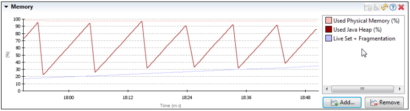
用户可以根据实际需要添加/删除想要观察的属性值，为便于与其他已有的属性值区分开，用户可以自定义属性的展示颜色。
另一个容易被忽视的特性是，在冻结界面更新（点击 冻结更新按钮）后，可以在界面中查看到额外信息。如下图所示：
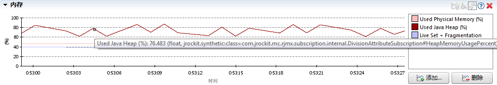
当在曲线图中选择某一区域进行缩放操作时，会自动冻结数据更新。若想在展示区中选择某一区域，只需左键点击展示图图形并在时间轴上拖动即可。点击右键菜单，即可选择具体缩放操作。
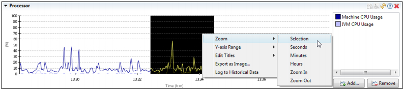
默认情况下，Y轴线是的数值是0到100。在添加属性时，若属性值超出该范围，则需要重新调整显式区间。在下面的截图中，添加了 Total Loaded Class Count属性值的显示曲线，该曲线所表示的值会超出默认显示范围。若像希望展示区能自动调整Y轴显示范围，可以右键点击展示区，选择菜单"Y轴范围 | 自动，始终显示零"。
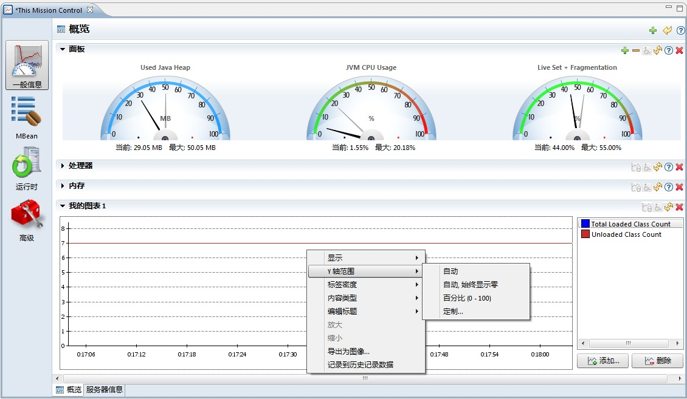
选择显示区间并不会修改原始数据，百分比区间为0～100%，值得注意的是，属性值为1时，并不会显示为100%。
即使属性值不是百分比，而且真的介于0和1之间，也可以正确显示在展示区中。展示的时候，会先将其具体数字乘以一个倍增系数，再加以显示，CPU使用率统计数据就是这样显示的。右键点击属性标签，选择"遍及预设倍增系数"即可对其进行修改。如下图所示：
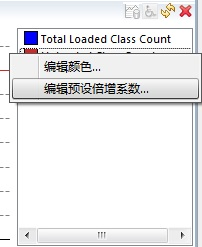
Management Console中的数据图表中包含了很多内容，通过查看上下文菜单可以找到相关信息。
7.2.2 MBean
MBean标签组中内容均与MBean的查看/操作/订阅/创建触发器等操作相关，它包含两个标签页，MBean浏览器标签页和触发器标签页，其中MBean浏览器用于查看注册在平台MBean服务器的MBean及其属性，触发器标签页用于创建针对特定条件的触发器。
7.2.2.1 MBean浏览器

在MBean浏览器中，如果某个属性是以粗体显示，则表明该属性是可写的。普通的MBean属性可以直接在MBean浏览器中进行修改，例如，可以通过在oracle.jrockit.management域下的GarbageCollctor MBean来修改已分配的堆的大小，双击 AllocatedHeapSize属性值即可进行修改。不必担心修改的属性值是否能立即生效，因为JRockit可能会因为各种原因（例如内存对齐和当前内存使用量）放弃用户设定的堆大小，而自行选择合适的值。
默认情况下，MBean浏览器中并不会将所有属性都显示出来。下面的截图中，已经设置了会定时刷新属性值。
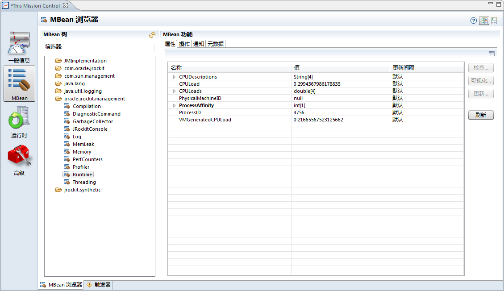
默认情况下，属性值会每秒更新一次。若想自定义某个属性的更新时间间隔，可以选中某个属性，然后点击"更新"按钮，在弹出的对话框中修改时间间隔即可。
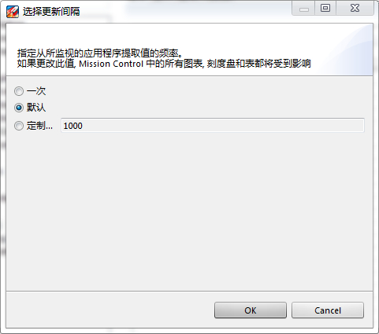
更新间隔可以被设置为：
- 一次：被选中的属性只会被更新一次。该选项适用于那些属性值不会发生变化的属性，例如机器的CPU数目。
- 默认：默认的更新间隔设置。一般情况下，默认间隔是1秒钟。该默认值可以在 窗口 | Preferences中进行修改。
- 定制：用户自定义以毫秒为单位的更新间隔。在下面的截图中，反映CPU负载的属性值会每两秒更新一次。
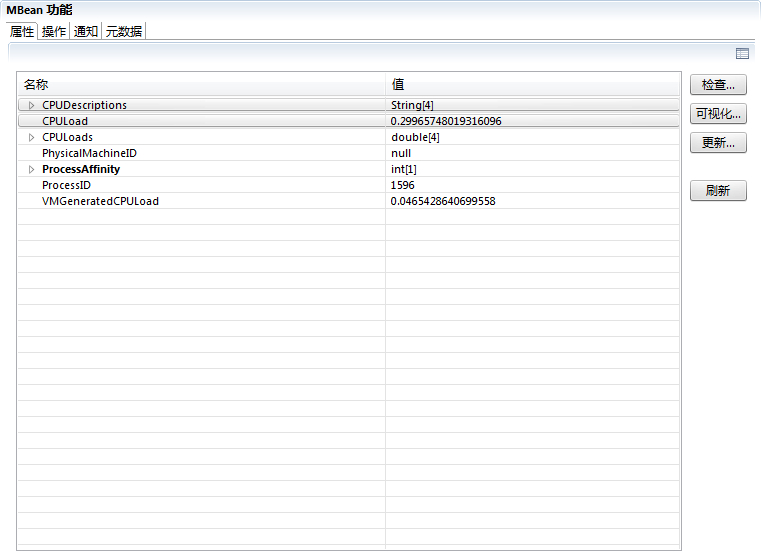
MBean浏览器还可以动态调用MBean的操作。当试用他人的JMX API或建立JMX API原型时，这个特性会非常有用。
例如，在MBean浏览器中，可以直接调用oracle.jrockit.management域下的DiagnosticCommandMBean中的操作。有关诊断命令的内容会在本章后续部分和第11章中做详细介绍。
打开 操作标签页，选中execute(String p1)操作，点击 调用按钮可以打开一个对话框，在其中点击 p1即可设置操作需要的参数，例如print_threads，点击确定后，就会执行相应的操作，在此处则会打印出线程的调用栈信息。当然，要打印线程栈信息还有其他更简便的办法（例如直接使用 高级标签组中 诊断命令标签页内容的相关命令），这里只是举个例子加以说明。
JRockit Mission Control Management Console区别于其他JMX控制台的地方在于，它可以对多种类型的属性值，甚至是部分值，进行订阅操作。例如，它可以对某个组合数据属性中的某个子属性值做订阅操作。
例如：
- 在MBean浏览器中，找到 Old Space MBean（准确来说是
java.lang:type=MemoryPool:name=Old Space MBean） - 展开 Usage属性，选择组合数据中的某个key，例如
#used - 右键点击该key，选择 可视化...*
- 在打开的对话框中，点击添加图表
现在回到 一般信息标签组的 概览标签页中，会看到展示区中多了一个图表，在其中绘制出了之前选择的key的属性值变化曲线，调整Y轴范围既可以清楚的看到曲线的变化趋势。
订阅不仅可以应用于普通MBean属性，还可以应用于自定义属性。一般来说，在客户端，都有一个与自定义属性相关联的实现类，用于实现获取数据的具体方法，由于实现方法由实现这自行决定，因此基于自定义属性的订阅可以从任何数据源获取数据。 LiveSet就是一个自定义属性，其属性值是通过对基于通知的垃圾回收属性和一些其他信息计算出来的。如果选中某个定义了 通知的MBean，则可以在名为 通知的标签页中订阅相关信息。不过，大部分MBean都没有定义通知操作。
例如：
- 在
oracle.jrockit.management域下，选择GarbageCollector这个MBean - 选择 通知标签页
- 勾选 订阅复选框
- 进入 操作标签页
- 执行
gc操作 - 回到 通知标签页，可以看到订阅信息
Depending on which garbage collector you have selected and which version of JRockit you are using, you may have one or several notifications listed in notifications tab.
依据垃圾回收器和JRockit版本的不同，在 通知标签页中所显示的订阅信息也不尽相同。
其他有关通知的内容请参见 java.lang.management.MemoryPoolMXBean和java.lang:Memory这两个MBean的说明文档。
通知标签页本身没有特别之处，只不过是执行JMX API而已，而它订阅服务时却非常有用，因此可用于实现属性的可视化展
不幸的是，目前还没有官方文档对自定义属性和基于自定义属性的通知做详细说明。现在只能通过在
attributes.xml文件中搜索与flavour="synthetic"和flavour="Notification"相关的内容看个大概，该文件位于com.jrockit.mc.rjmx插件中。如果读者向获得这方面内容的官方支持，请联系本书作者。
7.2.2.2 触发器
With the Management Console, rules can be built that trigger when a certain user- defined condition occurs. Such a rule consists of three different parts:
在Management Console中，用户可以根据业务需要定制触发器的规则，包含以下3部分：
- 触发条件：指明在何种情况下触发，例如当CPU负载超过90%时触发。
- 动作：指明满足触发条件时要做的操作。例如发送一封警报邮件。
- 约束条件：指明除了触发条件外，还需要满足哪些限制条件才能执行预定义的 动作。例如，"只在工作日"和"在9:00 AM和6:00 PM之间"。
在 触发器标签页中，可以添加/移除/激活/禁用/编辑触发器规则。从JRockit Mission Control 3.1开始，还可以对触发器规则做导入/导出操作。
在下面的截图中列出了一些已经定义好的触发器规则。左侧是触发器规则，后侧是规则的详细内容：
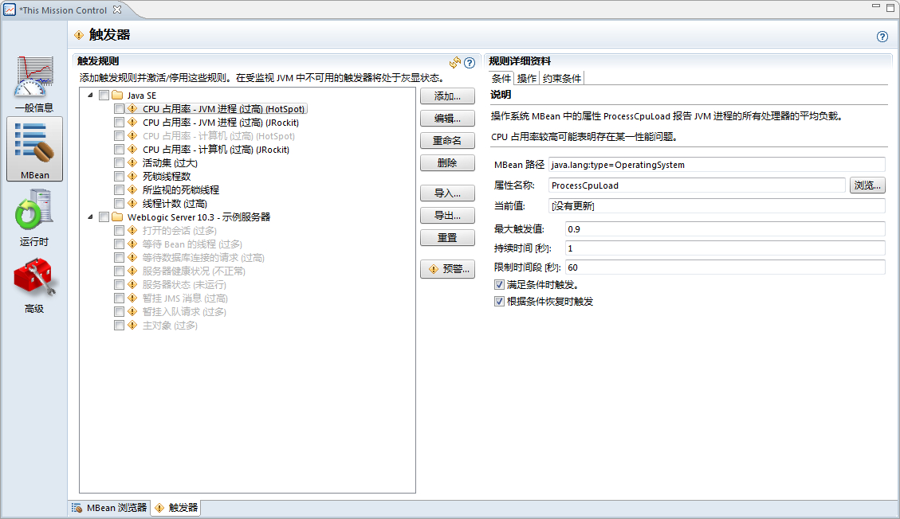
若要简单修改已有的触发器规则，例如修改要执行的动作或触发阈值，直接在 规则详细资料中修改即可。在之前的示例中，触发器都没有激活。若要激活某个触发器规则，只需在左侧触发器规则的属性菜单中勾选指定触发器的名字即可。
JRockit Mission Control自带了各种类型的示例规则。为了便于说明，这里创建一个和已有规则相同的触发器规则。
- 点击 添加...按钮，弹出 添加新规则对话框
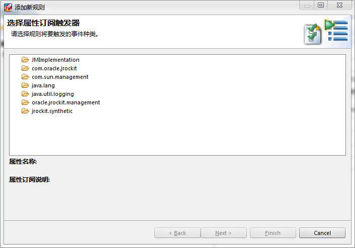
- 找到
oracle.jrockit.management.RuntimeMBean - 选择 CPULoad属性。该属性名前面的图标指明了该属性值是数值类型。创建触发器规则时，所选择的属性可以是数值类型或字符串类型
- 点击 Next，在 最大触发值中设置触发动作的阈值，例如 0.25，这里的 0.25是指，当COU负载达到25%时，就触发指定动作。
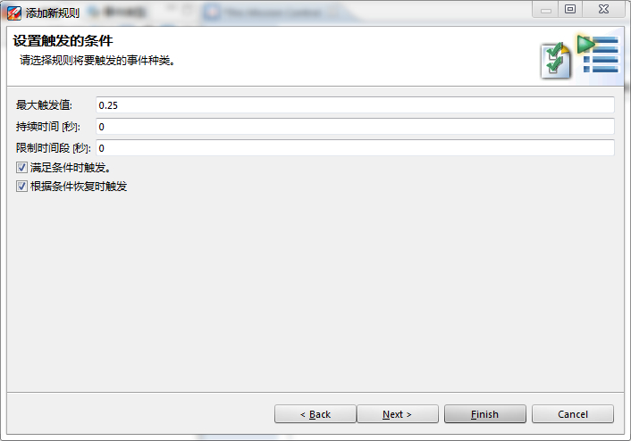
除了阈值外，还有一些其他触发选项：
持续时间[秒]：指定属性值达到阈值水平，并保持多久之后，才会触发预定动作
限制时间段[秒]：指定当达到阈值后，过了多久后就不再触发预定动作。触发次数过多的事件会直接被废弃掉
- 满足条件时触发：在这个示例中，当属性值达到0.25时，就会触发预定动作
根据条件恢复时触发：在这个示例中，当属性值从大于等于0.25变化到小于0.25时触发预定动作
点击 Next进入 应用程序预警对话框
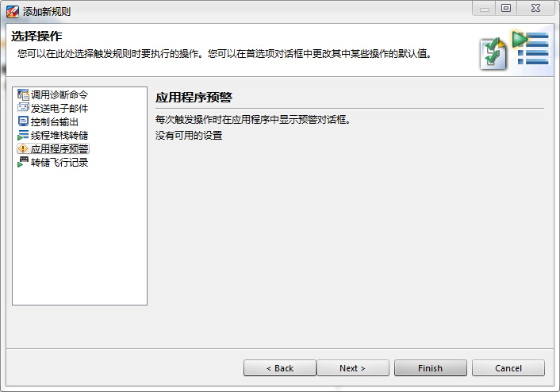
使用应用程序预警无需额外配置。当关联了应用程序预警机制的规则被触发后，会记录被触发的事件，并根据配置来判断是否要在日志窗口中进行展示。JRockit Mission Control中提供了一些默认的预警操作，用户还可以根据实际需要自定义预警操作。有关自定义预警操作的内容，请参见7.3节。
- 点击 Next选择约束条件
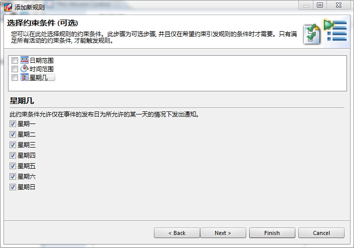
就这个示例来说，其实并不需要约束条件，这里只是举例加以说明，例如只在工作日触发。为了更好的配合业务需要，用户也可以自定义约束条件。
- 点击 Next查看规则名称和规则组名称
为了便于区别不同的规则，可以在 说明输入框中添加当前规则的说明内容，这里可以使用标准HTML语言对内容进行修饰。
点击 Finish结束
在触发器规则展示区中找到刚刚创建的规则，勾选复选框以启用该规则
试着增加CPU负载以触发自定义的规则。通常情况下，重画UI窗口就可以增大CPU，例如重设窗口大小
当达到预设的CPU负载后，会弹出 触发预警对话框，如下所示：
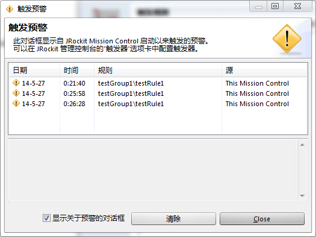
用户可以业务需要自定义触发动作和约束条件。这个功能是通过预定义的扩展点创建自定义插件来实现的。详细内容请参见7.3节。
7.2.3 运行时
运行时标签组中对JRockit运行时信息做了可视化展示。该标签组中的第一个标签页是 系统标签页。
7.2.3.1 系统标签页
该标签页中最有用的功能是可进行过滤操作的 系统属性表。过滤的时候可以选择是按照属性的名字，还是属性值进行过滤。例如，若只想查看属性名以 java.vm开头的属性，直接在过滤框中输入 java.vm即可。
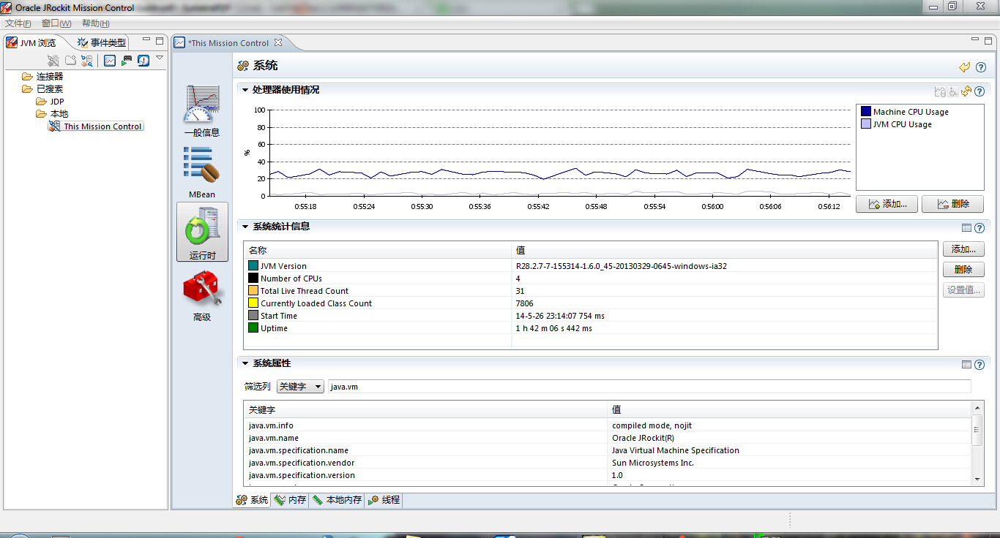
在过滤框中可以使用正则表达式，只需在输入内容前添加
regexp:前缀即可。例如，若想查看所有属性名以sun.开头，以path结尾的属性，则可以使用正则表达式regexp:sun\..*path。
默认情况下，在 系统统计信息展示区中会显示一些常用的属性值。JRockit Mission Control中的大部分表格都只显示了一部分列，用户可以点击 表设置按钮，在打开的对话框中选择要显示的列。在上面的截图中，通过 表设置新增了 更新时间这一列，用来展示属性值的更新时间。注意，不同的表格可能会展示不同的列。
从示例中可以看出，不同属性有不同的更新策略。例如，JVM Version就根本不会发生变化，而在应用程序运行过程中，CPU数量也基本不会发生变化。用户可以在MBean浏览器视图中修改属性的更新策略。
7.2.3.2 内存标签页
该标签页用于展示与内存相关的信息。在标签页顶部，是与 概览标签页中相类似的数据展示区，下面是两个属性表。其中第一个包含了一些内存统计信息，第二个包含了与垃圾回收相关的属性信息，其中的一些值会在应用程序运行过程中发生改变，例如已分配的堆的大小、垃圾回收策略和垃圾回收器的相关信息等。
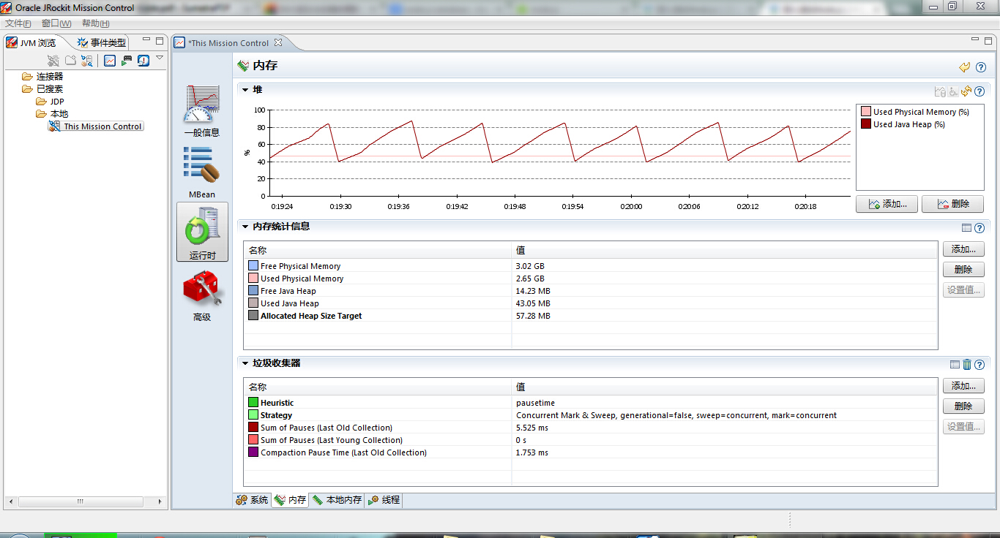
垃圾回收器会根据预设的优化目标而使用启发式算法来动态调整垃圾回收策略及相关参数，其优化目标包括最大化系统吞吐量和最小化暂停时间。
不同版本的JRockit可能使用了不同的启发式算法。就R28版本来说，垃圾回收的启发式算法可谓是包罗万象，可以根据应用程序的实际运行情况来调整相关参数，不过却不可以从一种启发式算法调整到另一种，这是因为在启动准确式垃圾回收器（JRockit Real Time）时，就已经根据预设的启发式算法而启用了很多专用的数据结构和配置信息。
垃圾回收策略由新生代、标记策略和清理策略组成。其中，新生代可能并不存在，标记策略和清理策略可以选择是并发还是并行，具体内容请参见第3章。
在R28版本中，如果启动JRockit JVM时，通过命令行参数-Xgc:singlepar显式指定了垃圾回收策略，则启发式算法就无法根据运行时反馈信息来调整垃圾回收策略了；而如果启动JVM时，指定了其他垃圾回收策略，则可以将之调整为singlepar。
以CMS垃圾回收算法为例，其垃圾回收策略的全名为Concurrent Mark & Sweep, generational=false, sweep=concurrent, mark=concurrent，但这个名字实在太长了。在第3章中曾经提到过，当使用命令行参数–Xgccommand-line时，只需要使用singlecon就可以代表这个完整的策略名。若想查看不同垃圾回收策略的全名，只需查找oracle.jrockit.management:GarbageCollectorMBean即可，其中的每个属性对应了一种垃圾回收策略全名，每个属性值都包含了一组CompositeData，而每个CompositeData都包含了一个name域和一个description域，name域的值就是垃圾回收策略的全名。
调整垃圾回收策略的同时还会对垃圾回收的启发式算法产生影响。使用并发垃圾回收策略会使启发式算法更关注应用程序的暂停时间，使用并行垃圾回收策略会使启发式算法更关注系统吞吐量。同样地，调整启发式算法也会对垃圾回收策略产生影响。
值得注意的是，在应用程序运行过程中调整启发式算法或垃圾回收策略，和在启动应用程序时就设置好启发式算法和垃圾回收策略并不相同。原因有二：
- 在运行过程中调整启发式算法为
pausetime时，如果先前没有可中止整理（abortable compaction），则调整后并不会为可中止整理而启用某些必要的数据结构，此时垃圾回收器就无法使用可中止整理。 - TLA的大小是根据启动参数计算得出的。调整垃圾回收策略或启发式算法并不会重新计算TLA的大小。
7.2.3.3 线程标签页
内存标签页中包含了当前正在运行的线程的相关信息。当前系统中的所有线程都会列在一个表格中，选中其中的某个线程后，Management Console会打印出该线程的调用栈信息，如下面的截图所示。在右侧，可以通过勾选复选框来启用 CPU概要分析、死锁检测和 内存分配概要分析几项功能，会在线程列表中显示相应的统计数据。点击右上角的 表设置按钮，在其中列出了更多有关线程的详细数据，用户可根据自身需要自行设置。
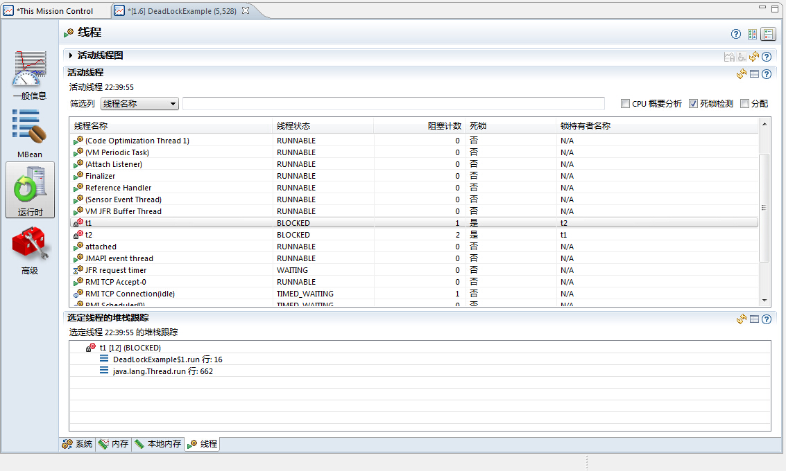
在截图中，勾选了 锁持有者名字和 死锁检测后，会在两列中分别显示出各自的内容。
死锁检测可算是JRockit Management Console的一大亮点，对于调试并行应用程序来说，非常有用。
从上面的截图中还可以看到，对于发生死锁的线程，Management Console是使用特殊的图标来标识。在这里可以看到，线程 t1和 线程t2之间发生了死锁。
在Management Console中还有一个容易被忽略的特性就是 CPU概要分析。在启用CPU概要分析后，Management Console会显示出每个线程的CPU使用情况，并以柱状图加以展示。
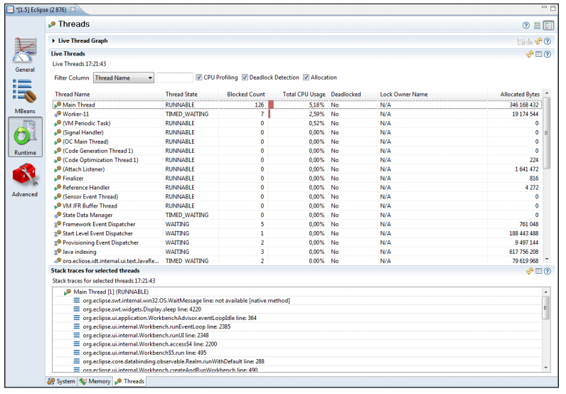
启用 内存分配概要分析后，会显示出该线程中已经分配的内存数量。注意，该数值是该线程运行以来所分配的内存的总量，而不是该线程当前所使用的内存数量。
7.2.4 高级标签组
高级标签组中包含了一些复杂功能，可用于做性能分析，或探查JRockit JVM的内部原理。本节将会对其中的功能做简单介绍。
7.2.4.1 方法概要分析
在 方法概要分析标签页中，可以对指定类型的方法的执行情况做概要分析。不同于基于采样的方法分析，这里做的准确分析，每次调用调用目标都被做详细记录。在第8章 Runtime Analyzer和第9章 Flight Recorder会对基于采样的方法分析做详细介绍。
在添加方法概要分析之前，要先关闭已有的概要分析，然后为待分析的方法选择一个模板，或点击 添加按钮来新建一个模板。模板不仅可以保存已经的设置，方便下次访问，还可以快速打开/关闭对某一组方法的概要分析。
在为新模板设置了名字之后，需要为被选中的模板选择带分析的类，如截图所示。
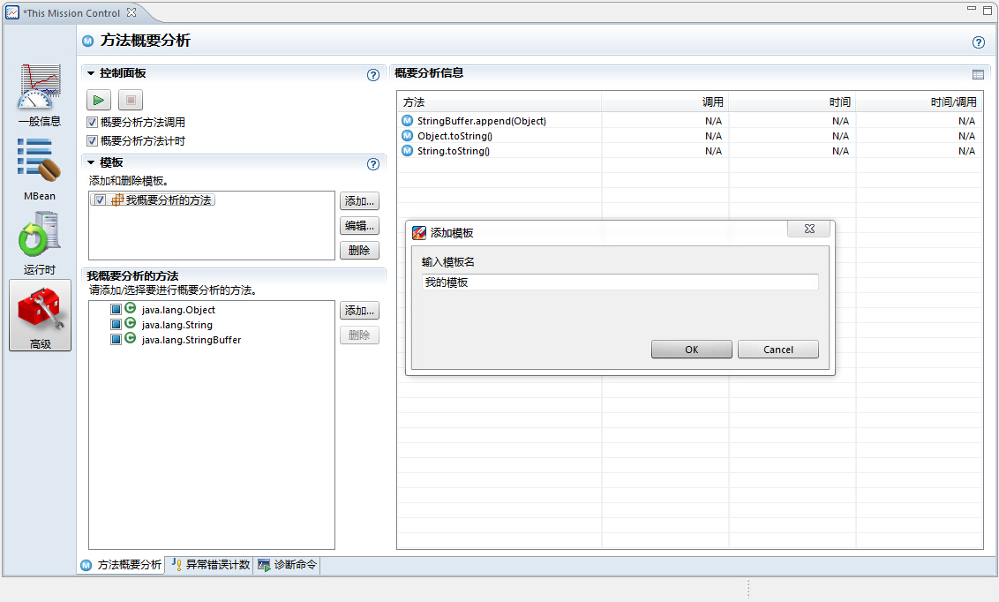
Method Profiler会从JVM中抓取目标类的方法信息，以树形菜单的形式列出：
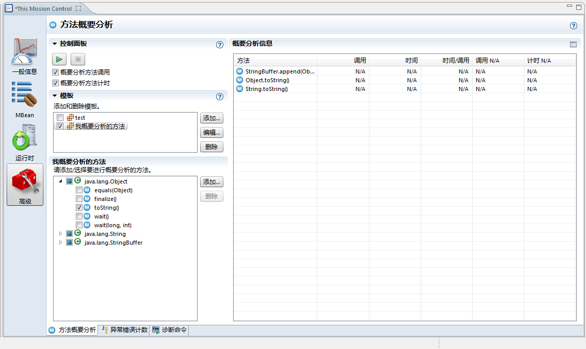
如果启用了对模板中某个类或方法的概要分析，则会在 概要分析信息展示区中列出相关方法的调用信息。若没有启用的话，只需在勾选方法名或类名前的复选框即可。
在控制面板展示区中，有启动和关闭分析器的按钮。下面的截图是示例应用程序Java2D的方法概要分析：
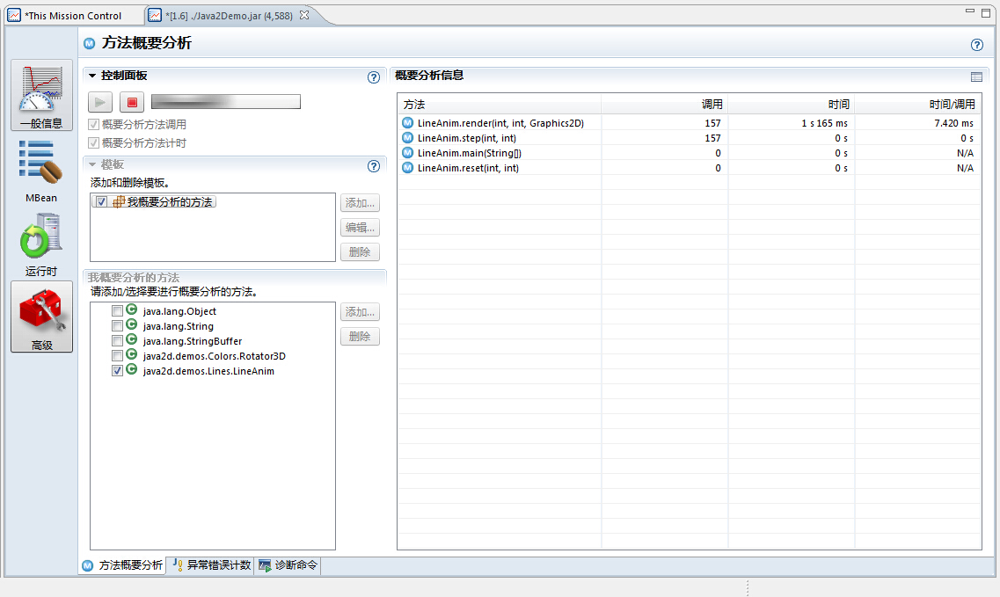
使用Method Profiler时，有一些事情需要特别注意：
- 需要指定带分析方法集合：这是一个"先有鸡还是先有蛋"的问题，因为在做详细分析之前，很难知道到底需要对哪些方法做分析，在真正做了方法分析之后，才能知道哪些方法是性能瓶颈。
- 难以衡量准确式分析所带来的性能损耗：由于Method Profiler不是基于采样分析的，因此很难准确预测分析所带来的执行开销，对于那些执行时间不长或执行频繁的方法来说，更是如此，要想准确统计方法的时间信息更是难上加难。如果对应用程序中所有的热点方法都做概要分析，则随之而来的执行开销是相当大的。
- 无法获得当前类载入器信息：分析器只会对它所找到第一个相匹配的类进行分析，因此，如果某个类被多个类载入器载入，分析器就无法准确找到目标类了。
当出现性能瓶颈时，开发人员通常会对目标方法做性能优化。一般情况下，优化之后会使应用程序的性能大幅提升，但在某些案例中，即便对目标方法做了优化，也并不能提升应用程序的整体性能，其根本原因在于，被优化的方法并不是应用程序的热点方法，因此，即使花费大量精力对其进行优化，也只是浪费时间而已。
在分析应用程序的执行性能时，最好先从启用JRockit Flight Recorder开始。如果在记录了应用程序运行状况后，还是想在线执行准确式方法分析，请慎重考虑是否真的有必要这样做。在保存了运行记录后，就可以清楚的知道应用程序都把时间花在了哪里，是否值得把时间花在那里。此外，还可以获知知道代码优化是否真的起效，以及被优化的方法是否真的被调用了。这也是Method Profiler的价值之所在。
7.2.4.2 异常标签页
异常标签页用于显示应用程序所抛出的异常的数量，用户可以根据实际需要来选择是统计指定类型所抛出的所有异常还是统计某个指定类型的异常。
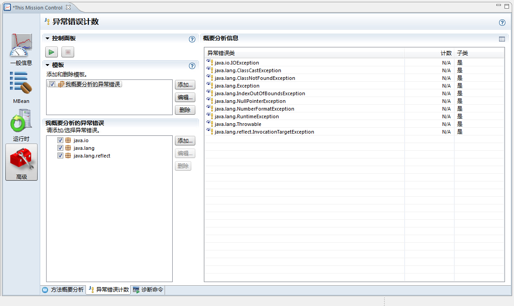
这里的功能比较有限，还不能显示出异常栈信息。如果想知道异常时从何处的抛出的，抛出了多少异常，则应该选择使用JRockit Flight Recorder，或者启用详细日志记录。更多有关JRockit Flight Recorder的内容，请参见第9章。有关如何记录详细日志的内容，请柬惨第5章和第11章。
7.2.4.3 诊断命令标签页
诊断命令标签页可以访问到JRockit JVM内部的一些诊断命令，这些命令会通过JRockit Management API或命令行根据 JRCMD发送给目标JRockit JVM。
更多有关诊断命令本身和JRCMD的内容，请参见第11章，有关JRockit Management API的内容，请参见第12章。
诊断命令左上角的列表框中列出了3组不同类型的诊断命令，分别是 普通（normal）、高级（advanced）和 内部（internal）。普通组，顾名思义，可以在生产环境下执行，不会带来负面影响。当然，也有例外，例如，反复执行runsystemgc命令可能会带来性能损耗，执行print_object_summary命令则可能会触发一次垃圾回收（这是因为该命令会遍历堆来收集所有对象的相关信息）。
高级组，其中的命令相对复杂一些，需要在对JRockit JVM本身和相关的安全、性能方面的知识有更深入的了解后，才能准确掌握这些命令。例如，heap_diagnostic命令的执行开销就比较大，而start_management_server命令由于会启动外部管理工具，从而带来安全问题。
在命令列表上面，是一个筛选器，有助于快速找到所需的命令，则命令列表的右侧是与该命令相关的参数。
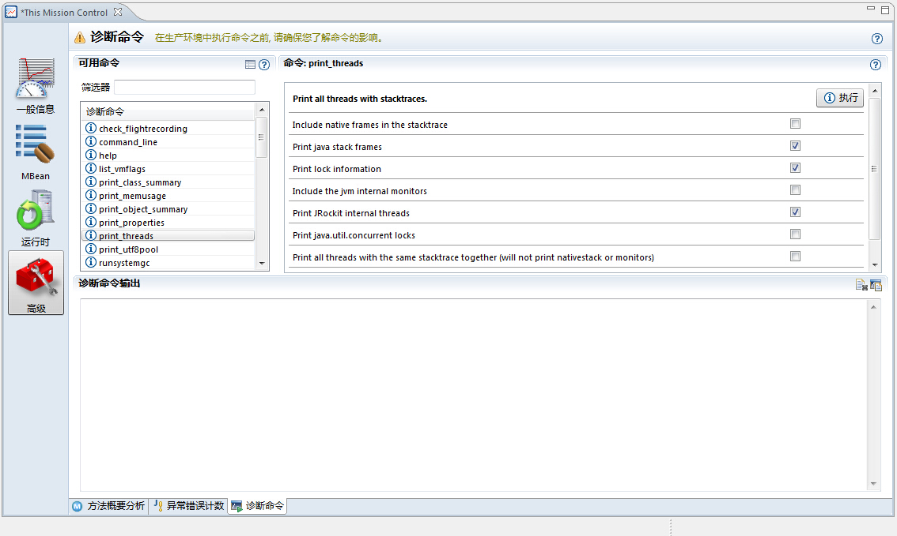
点击 执行按钮就会在目标JVM中执行当前选中的诊断命令，命令结束后，会在标签页底部的 诊断命令输出展示区中显示命令执行结果。注意，并非有些诊断命令并不会有输出，它们只是通知JRockit JVM执行相同的动作。
点击 诊断命令输出展示区右上角的 附加输出按钮，可以将多个诊断命令的执行结果输出到一起。
7.2.5 其他标签组
当用户安装了自定义标签后，就在会出现一个额外的标签组，其他标签组。下面将简要介绍JRockit Meta Plugin标签页的安装。
7.2.5.1 JConsole
In the JDK, a JMX management console named JConsole is included. In 6.0 versions of the JDK, JConsole has its own plug-in interface, through which additional tabs can be added. The JConsole plug-in for JRockit Mission Control allows such plug-ins to run inside the JRockit Management Console, as shown in the following screenshot:
在JDK中，附带了一个名为JConsole的JMX管理控制台。在JDK 6.0版本中，JConsole中包含了插件接口，通过插件接口添加额外的标签页。针对JRockit Mission Control的JConsole插件如下图所示：
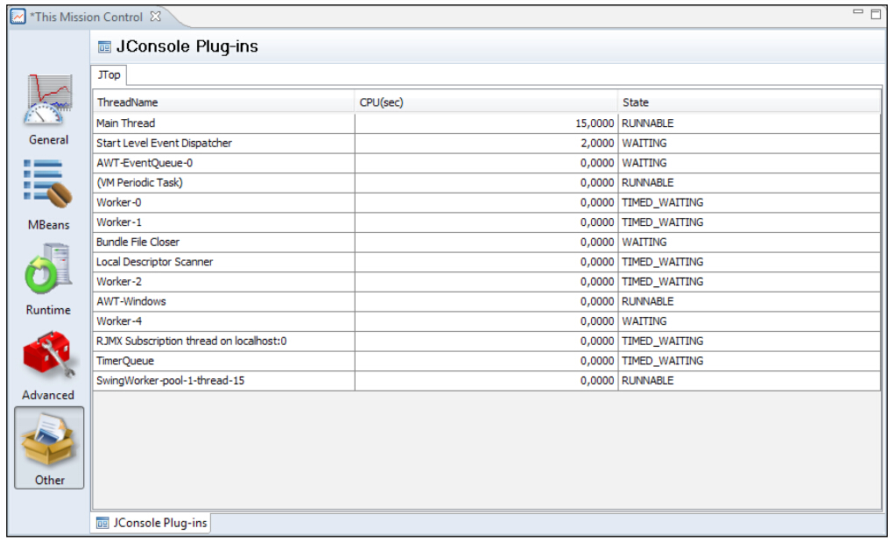
若想运行JConsole插件，JRockit Mission Control（或者Eclipse，如果是在Eclipse中运行JRockit Mission Control的话）的版本至少是JDK 6.0。JConsole插件会自动寻找随JDK一起发行的JTop插件（该插件的位置在demo/management/JTop文件夹下），并以该文件夹作为JConsole插件目录。JConsole插件目录下所有包含了JConsole插件的jar包都会被添加JConsole插件标签下。
JConsole插件目录和插件更新时间间隔是可修改的，具体位置在 Windows | Preferences菜单下，如下图所示：
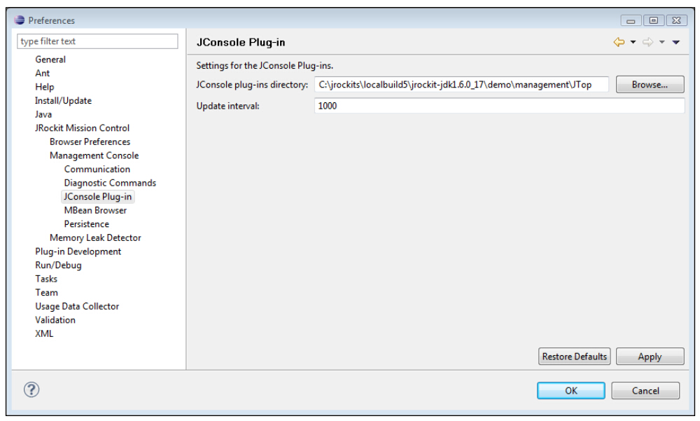